Electriquiped
Vì nhu cầu tiết kiệm của bạn
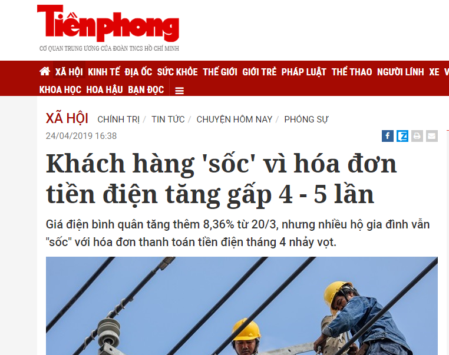 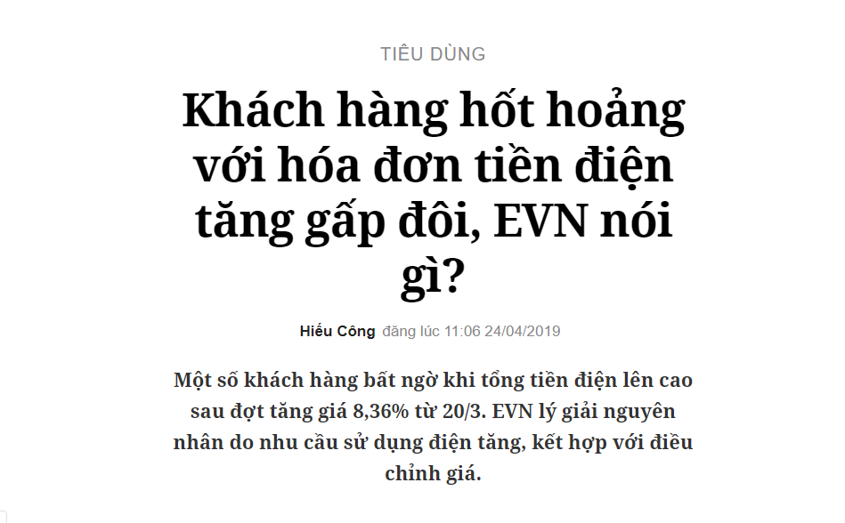
Hướng dẫn:
Ấn vào biểu tượng "edit"
Đăng nhập vào tài khoản Google
Hãy chọn đồ gia dụng
Nhập công suất(W), thời gian sử dụng(hours), số lượng
Nhập số ngày sử dụng hàng tháng
Ấn vào “submit”
Để nhận lời khuyên về việc tiết kiệm điện, ấn vào 10% hoặc 5% hoặc 3%
 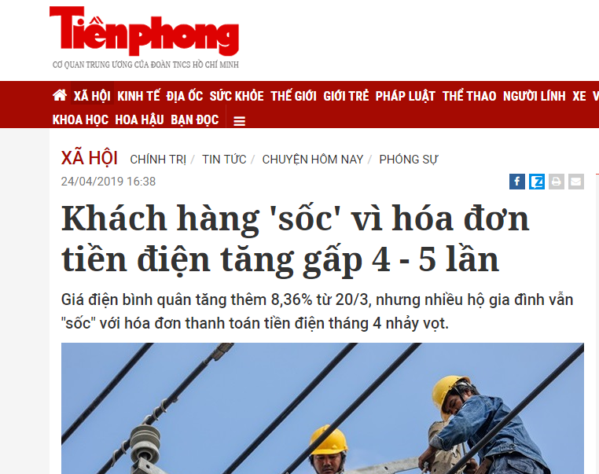
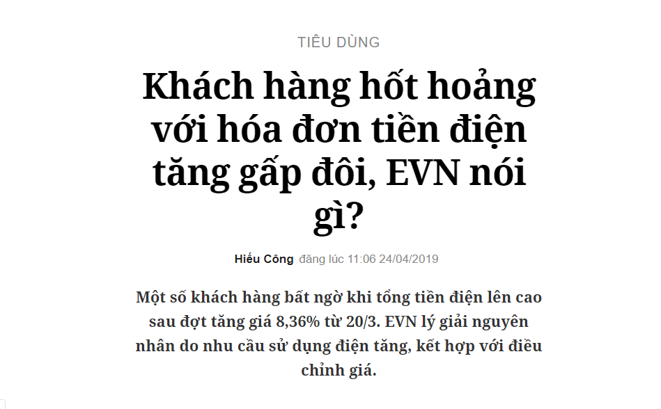
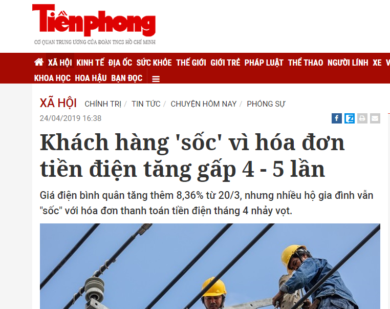
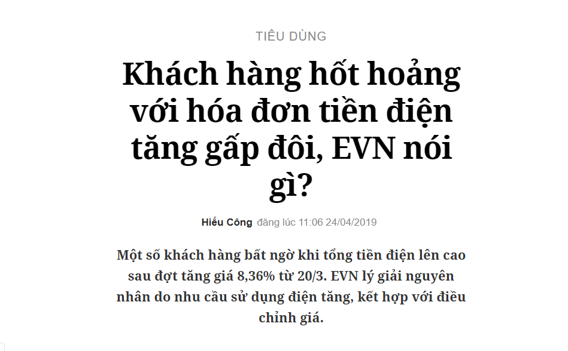
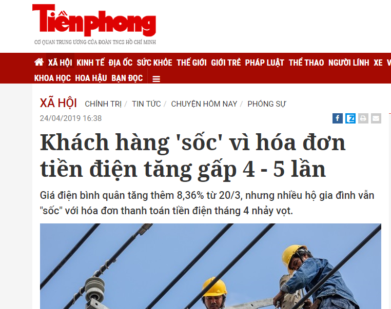
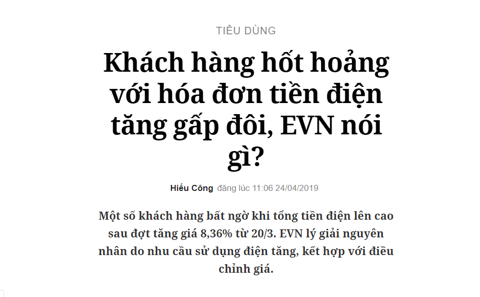
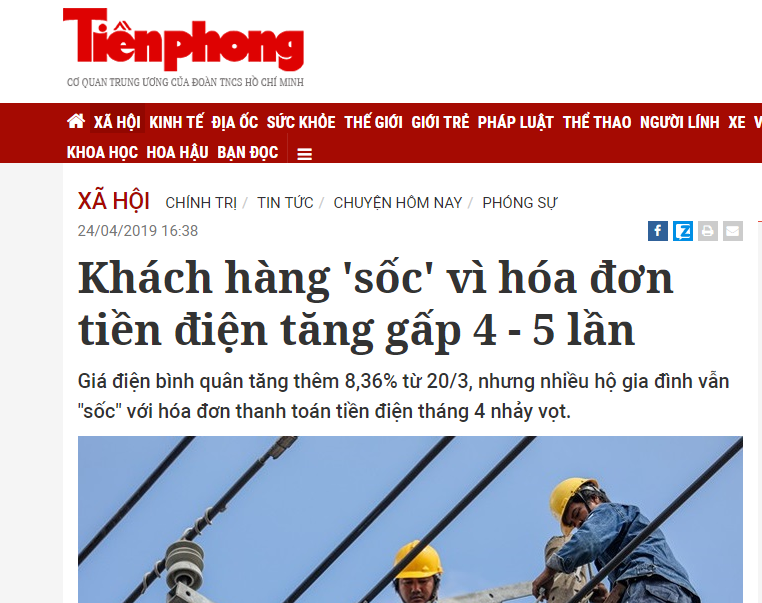
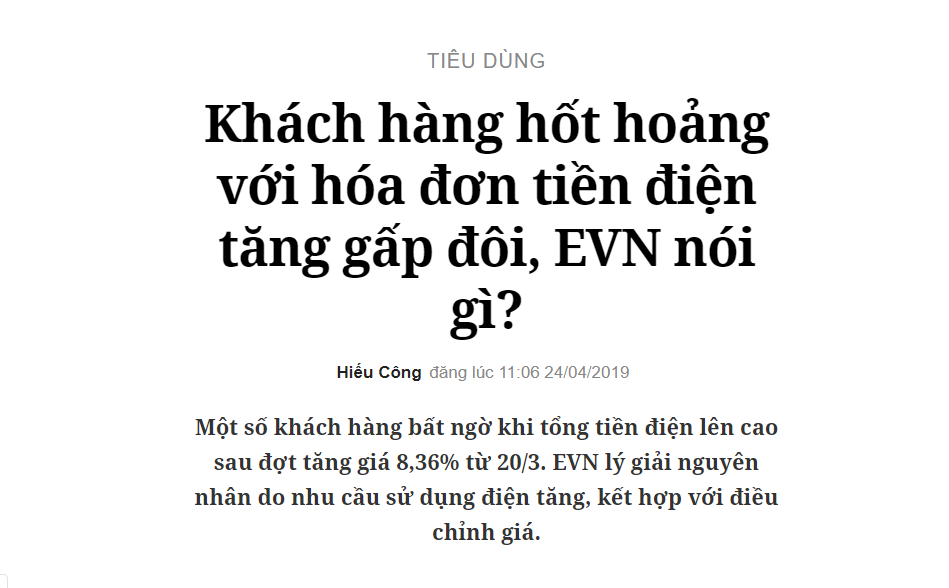

 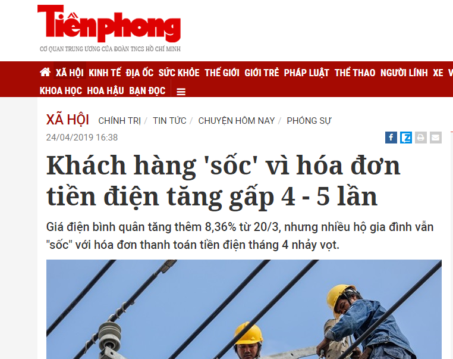
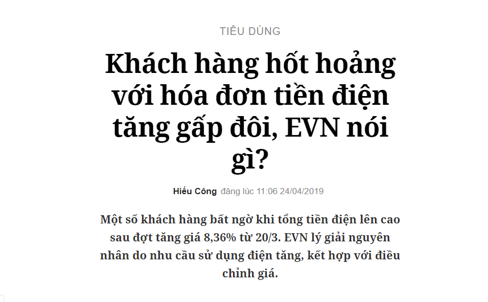
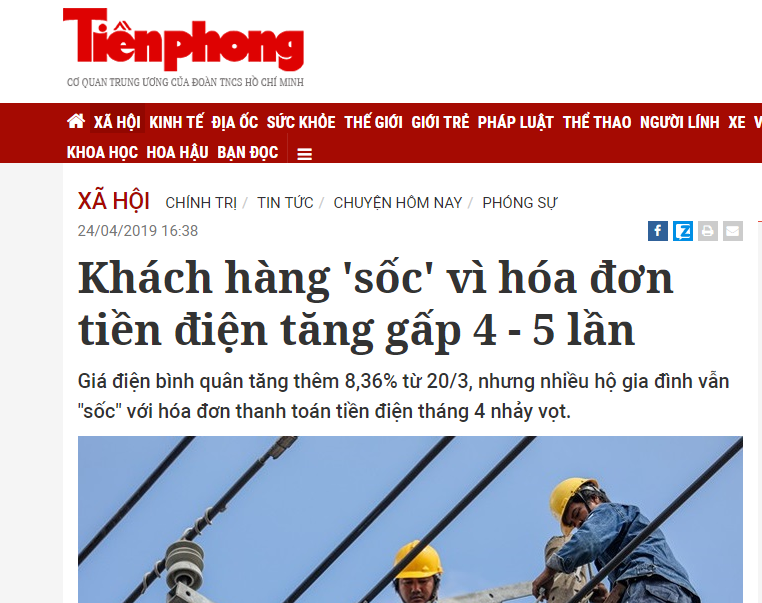
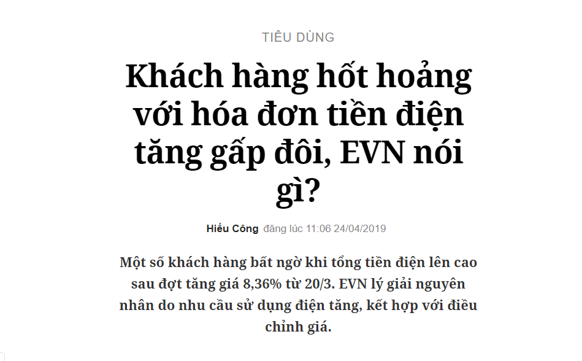